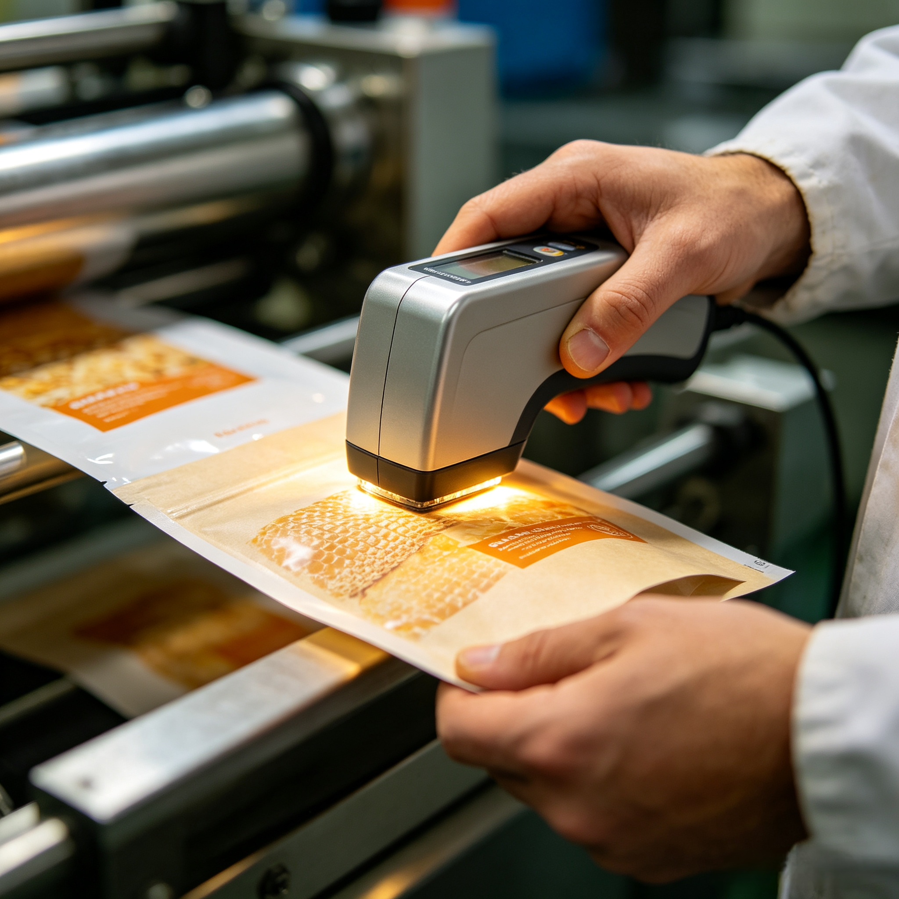

Mastering Color Consistency: Our Delta E (ΔE) Printing Standards

For brands, packaging color is not just ink on film—it is your identity. When a consumer picks up your product on a shelf, they expect the color to match your brand guidelines perfectly every single time. At Shenying Packing, we bridge the gap between creative design and manufacturing reality through strict Delta E (ΔE) color control.
1. What is Delta E (ΔE)?
Delta E (ΔE) is the standard metric used to measure the difference between two colors. In the printing industry, it quantifies how much the printed color deviates from the approved digital or physical color standard. The lower the ΔE value, the more accurate the color.
2. Why Strict Control Matters
Inconsistent color can damage consumer trust and dilute your brand image. Whether it’s a specific corporate blue or a vibrant logo red, our printing standards ensure:
- Batch-to-Batch Consistency: Your packaging looks the same today as it did a year ago.
- Brand Integrity: Your product stands out correctly against competitors on retail shelves.
- Reduced Waste: By controlling color early in the process, we eliminate costly reprints and delays.
3. The Shenying Packing Printing Standard
We combine advanced spectral analysis with rigorous human inspection to maintain our high printing standards. Our process includes:
- Digital Color Management: Utilizing spectrophotometers to measure color data rather than relying solely on subjective human eyesight.
- Strict Tolerance Levels: We define and adhere to tight ΔE tolerances suitable for premium retail packaging.
- On-Press Monitoring: Real-time checks during the production run to prevent drift.
Summary
Color accuracy is a reflection of quality and professional integrity. At Shenying Packing, we don’t just print; we manage your brand’s visual consistency with precision. If you are struggling with color drift in your current packaging, it’s time for a more disciplined approach.
Need precise color reproduction for your next project?
Partner with a manufacturer that prioritizes your brand vision:
📧 Email: may.lee@shenyingpacking.com
💬 WhatsApp: +86 13424643780